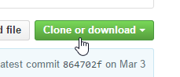
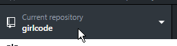
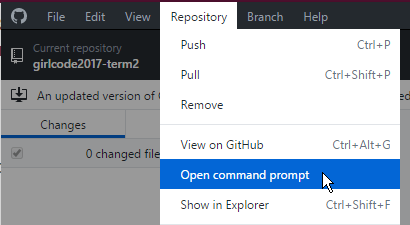
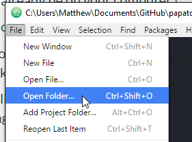
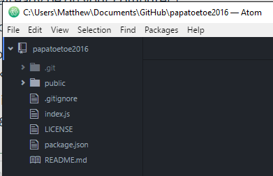

Let's get ready to work on the team project.
This page has two sections: first time setup and Starting each week.
Make sure you have signed in:
(You only have to do this the first time.)
Our mentors will send you an invitation to join the new project. Check your email for a message from GitHub. You will have to open the email and click a few links to accept the invitation.
(You only have to do this the first time.)
1. Go to the list of Girl Code projects at https://github.com/girlcodeakl/
2. Your team's project should be on the list (ask which one it is if we haven't said). Click on the project to go to the project page.
3. Click 'Clone or download', then choose 'Open in desktop' to clone the project using Github Desktop.
This will create a clone (a copy) of the project on your computer. Keep a note of where on your computer it was created!
Not working? If this doesn't work, it usually means you're not logged into your GitHub account on Google Chrome, or in GitHub Desktop (the app on your computer). If it still doesn't work, try restarting Chrome and trying again. If it still doesn't work, ask our mentors for help.
We need to get four tools ready:
Make sure the right respository is selected.
In Github Desktop, click Repository then Open in Terminal (Mac) or Open in Command Prompt (Windows)
This will open a Terminal or Command Prompt window in the right folder.
If this is the first time, type npm install into Terminal or Command Prompt and press Enter. This will install dependencies and might take a little while.
Then start the app with this command: node index.js (then enter)
Your terminal or command prompt should now be busy running the server.
In your web browser, go to http://localhost:3000/ to visit your local server.
It should look a lot like our last project, because we are using the same code as a starting point.
Start Atom and open the folder that holds your project:
You should see this list of files on the left side:
If you don't see package.json you may have gone too deep and opened a folder inside the main folder.
Here's how your working day goes from now on:
Then you can work on the issue! Make a commit whenever you feel you've completed a step.
When the job is done:
Pick up another ticket and start all over again! Remember to switch back to the master branch, fetch and pull the latest changes, and create a new branch before your next issue.